Add Shortcut on iPad
Save a little bit of time upfront by making a shortcut icon on your iPad's Home Screen.
How to Create a Shortcut on the iPad to open FrameReady
-
Unlock your iPad and open the Shortcuts app.
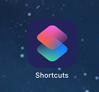
-
Tap the blue "plus" + icon (top) to start creating a new shortcut.
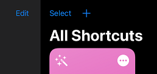
-
Tap in the Shortcut Name field (upper right) and enter a name for the new Shortcut, e.g. FrameReady.
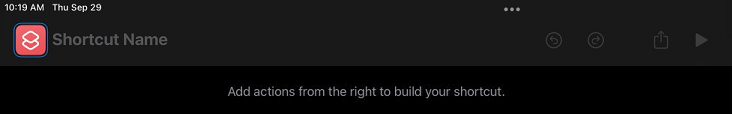
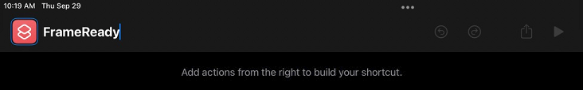
-
On the right side, tap in the "Search for apps and actions" field and type: Open url
This filters the list to show matches.
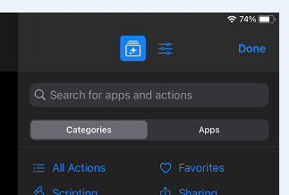
-
In the results that appear below the search box, tap the Open URLs button.
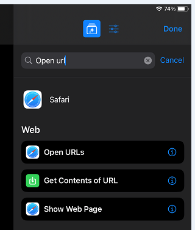
-
A new shortcut, the "Open URL" action, is added to the left side.
Tap the blue text URL so you can then enter the IP address of your FrameReady/FileMaker Server.
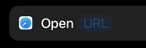
-
To find the IP address of your server:
Go to the Main Menu of FrameReady, click Setup Data (top right) and open the Network tab.
Click the What's My IP Address button. In the alert, look for "The IP Address of the host computer is..." and write down that number.
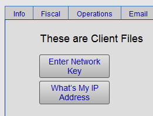
-
Type in the IP address of your FrameReady/FileMaker Server but, before entering the IP address, add the prefix: fmp19:// , e.g. fmp19://192.168.1.100
-
Tap Done (top right) to return to the Shortcuts main menu. You should see a new button:
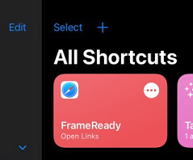
-
Tap the circle-with-three-dots button to go back and edit your FrameReady shortcut.
-
Tap the blue Preferences icon (three bars) to open new functionality.
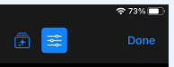
-
Tap the blue Add to Home Screen button.
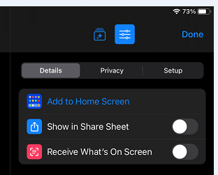
-
Click the blue text Add (top) to add the icon to your iPad's Home Screen.
The Shortcut apps returns to the Home Screen; you can tap-hold to move the icon.
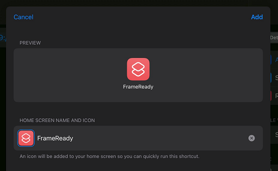
-
Tap the new Shortcut icon to launch FrameReady.
If FileMaker Go does not launch, double-check that the address begins with fmp19://
If FileMaker Go launches but does not open FrameReady, check that the IP address of the server is correct.
© 2023 Adatasol, Inc.